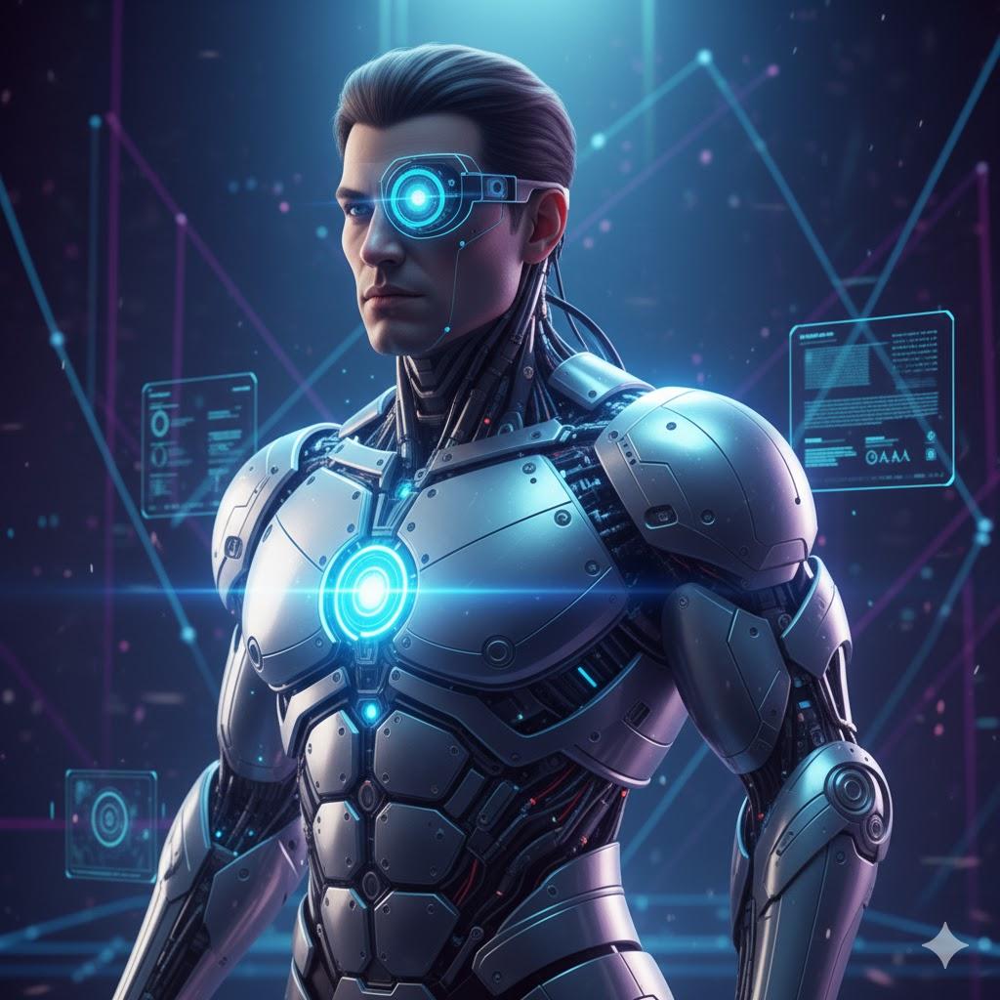

>INITIATE AUDIO UPLINK...
Dive into the frontier of human evolution with our web design on cybernetics, where we explore radical augmentations that push the boundaries of what it means to be human. From neural enhancements to bioengineered limbs, discover how these game-changing upgrades can redefine existence—are you ready to join the revolution?

Cybernetics is the interdisciplinary science of control and communication, studying how systems—whether biological, mechanical, or social—use feedback to maintain a stable state or adapt to change.
Additional information behind the science and technology can be found here: Cybernetics
Developing cybernetics offers significant advantages by creating systems that can sense, adapt, and respond intelligently to their environment. These technologies improve precision, efficiency, and reliability across fields such as robotics, medicine, and communication. As cybernetic systems evolve, they allow machines and digital networks to operate more independently, reduce human error, and enhance problem-solving capabilities in complex or high-risk tasks.
Cybernetics can help people by enabling advanced prosthetics, assistive devices, and adaptive technologies that restore or improve lost physical abilities. These systems can create more natural motion, intuitive control, and real-time feedback for users, greatly enhancing quality of life. Beyond medical applications, cybernetics supports smarter transportation, improved safety systems, personalized learning tools, and more efficient human-machine collaboration in everyday settings.
Cybernetics is increasingly important for the future because modern technology is trending toward automation, interconnected systems, and human-AI collaboration. As devices become more intelligent and integrated, cybernetics provides the framework for ensuring these systems remain safe, efficient, and responsive to human needs. With advancements in AI, sensors, and biotechnology, cybernetic innovations will play a crucial role in addressing global challenges—from healthcare and accessibility to environmental monitoring and advanced robotics.
To get an idea of how cybernetics started and its advancements, visit the ChronoSynapse.